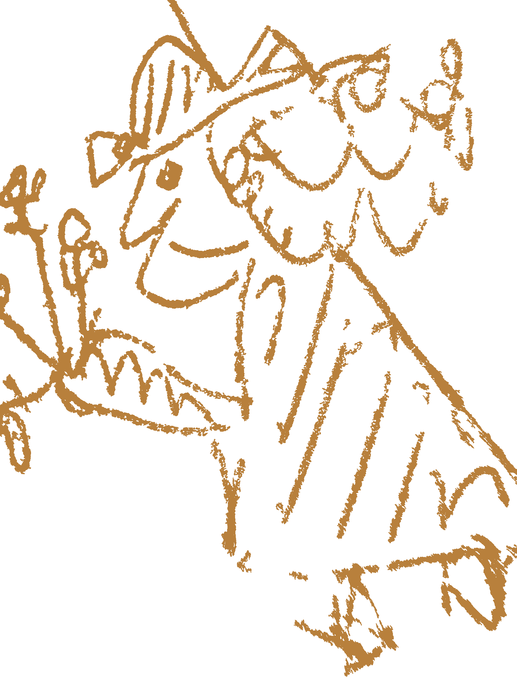

← A Joker's Arsenal

Boal's methods
Rainbow of Desire —
Introspective Techniques
Augusto Boal · The Rainbow of Desire · Routledge 1995 · p. 118–173
Nine techniques for making internalised oppression visible. Not the cop on the street — but the cop in the head. Use them intuitively; not every step has to be carried out.
←
→
Step by step
Overview
←
→
techniques ·
↑
↓
steps ·
space
overview